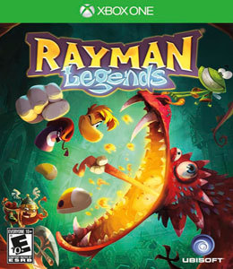
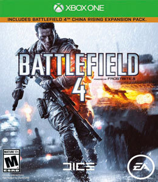
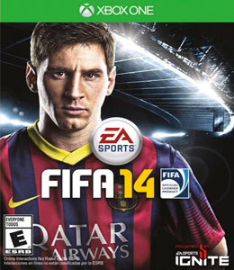
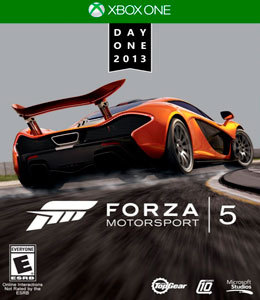

Que tal uma nova aventura com nosso pequeno grande herói? Pois Rayman Legends traz uma jornada que continua a já vista em Rayman Origins. Utilizando as novas funcionalidades do Wii U, o jogo traz interações inovadoras nunca antes vistas nos jogos tradicionais. Com o controle do Wii U você usará as novas tecnologias para enfrentar seus inimigos e manipular e rotacionar plataformas em sua TV — tudo isso tocando na tela de seu controle! E que tal jogar apenas pelo controle? É possível jogar apenas na pequena tela e continuar suas aventuras mesmo com a televisão desligada.
Lançamento: 18/02/2014
Tipo de jogo: Aventura
Desenvolvedora: Ubisoft Montpellier

Guerra, sendo o título definitivo do gênero e prometendo ser um grande campeão de vendas. Utilizando todo o poder da nova geração da engine Frostbite 3, o título oferece uma experiência única, intensa e dramática como nunca antes. No campo de batalha é possível derrubar construções inteiras, utilizar armamento pesado em um barco a motor, fazer chover tiros sobre seus inimigos enquanto pilota um helicóptero e muito mais. Battlefield 4 garante uma incrível liberdade de jogo que ao mesmo tempo testam suas habilidades e de sobrevivência em meio à guerra. O modo multiplayer é extremamente intenso, trazendo mapas incrivelmente detalhados e vastos... Leia o resumo completo Battlefield 4 chegou para reescrever os jogos de guerra, sendo o título definitivo do gênero e prometendo ser um grande campeão de vendas. Utilizando todo o poder da nova geração da engine Frostbite 3, o título oferece uma experiência única, intensa e dramática como nunca antes. No campo de batalha é possível derrubar construções inteiras, utilizar armamento pesado em um barco a motor, fazer chover tiros sobre seus inimigos enquanto pilota um helicóptero e muito mais. Battlefield 4 garante uma incrível liberdade de jogo que ao mesmo tempo testam suas habilidades e de sobrevivência em meio à guerra. O modo multiplayer é extremamente intenso, trazendo mapas incrivelmente detalhados e vastos, perfeitos para uma jogabilidade afiada e envolvente. O modo campanha oferece uma história dramática que tem início com a evacuação de Shanghai na jornada de sua equipe até seu lar. Tudo isso é uma experiência ainda mais intensa que seus antecessores, apenas encontrado agora em Battlefield 4.
Lançamento: 19/11/2013
Tipo de jogo: Shooter
Desenvolvedora: EA DICE

FIFA 14 chegou para marcar a nova era da franquia! A realidade e a imersão estão à flor da pele, permitindo que os jogadores entrem de cabeça no mundo do futebol. Melhorias na jogabilidade agora permitem criar estratégias e mudar o rumo de uma partida inteira. O novo recurso, Pure Shot, fazem com que cada tentativa de gol se torne uma emoção sem igual. E ainda há recursos online que incrementam ainda mais a experiência, conectando os jogadores e fãs do esporte na EA SPORTS Footbal Club. É uma verdadeira rede social do futebol, onde jogadores podem interagir, competir e compartilhar suas jogadas com milhares de pessoas do mundo todo.
Lançamento: 19/11/2013
Tipo de jogo: Esportes
Desenvolvedora: EA Canada

Prepare-se para acelerar novamente no mais novo capítulo de uma das franquias de maior sucesso de simuladores de corrida! Forza Motorsport 5 surpreende a todos com um visual espetacular, sem contar as pistas e carros fiéis e prontos para proporcionar aos jogadores as melhores experiências em velocidade e adrenalina. Que tal pisar fundo em seu Xbox One? Esta é a hora!